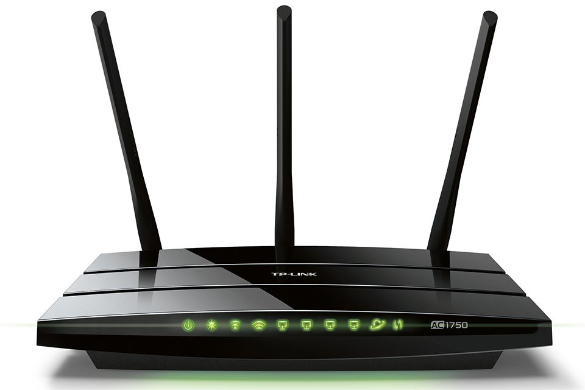
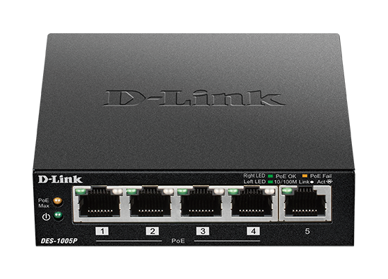
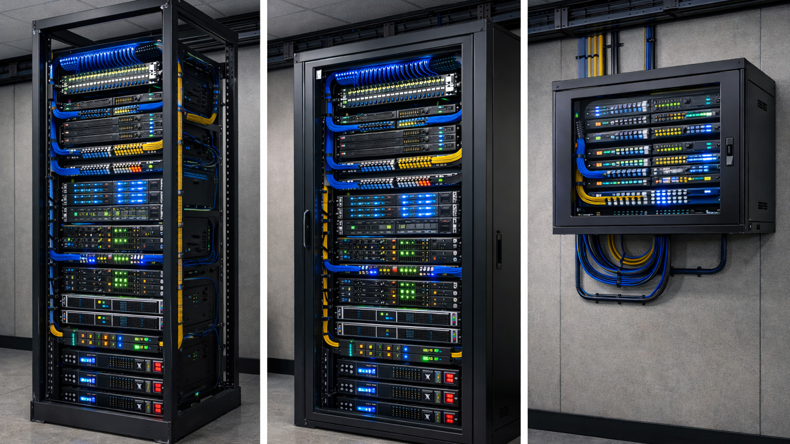
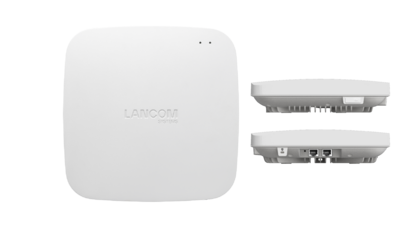

Es el dispositivo encargado de dirigir el tráfico de datos entre diferentes redes.
Permite conectar una red local con Internet.

Conecta varios dispositivos dentro de una misma red.
Envía la información únicamente al dispositivo destino.

Equipo que proporciona recursos y servicios a otros dispositivos conectados a la red.
Puede almacenar archivos, páginas web o bases de datos.

Permite que dispositivos inalámbricos se conecten a una red cableada.
Es muy utilizado para ampliar la cobertura WiFi.
| Dispositivo | Función |
|---|---|
| Router | Conectar redes e Internet |
| Switch | Interconectar equipos en una LAN |
| Servidor | Proporcionar servicios y recursos |
| Punto de Acceso | Proporcionar conectividad WiFi |